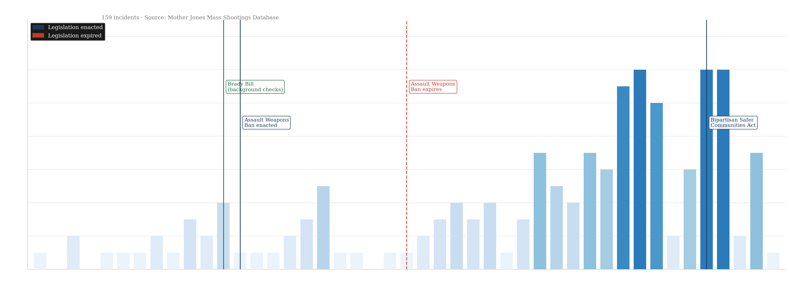

If it worked there, why hasn’t it worked in America?
The blueprint exists. We’ve seen it work.
In April 1996, a gunman killed 35 people at a tourist site in Port Arthur, Tasmania. Twelve days later, Australia passed sweeping national gun reform — banning semi-automatic weapons, launching a mandatory buyback of over 650,000 newly prohibited firearms (643,726 purchased by the federal government at market value under the 1996–97 buyback, with more than 700,000 guns removed in total from a population of about 12 million adults), and introducing uniform gun registration across every state.1
The results were stark. In the 18 years before Port Arthur, Australia experienced 13 mass shootings (defined in that study as incidents with five or more firearm-related homicides by one or two perpetrators in a civilian setting); in the 10.5 years that followed, there were zero. The rate of total firearm deaths, which had already been declining, accelerated — the estimated annual downward trend roughly doubled after the laws (for example, total firearm deaths: about 3% per year before vs about 6% after; p = 0.03). Firearm suicides fell faster still (p = 0.007), with no evidence in that analysis that people simply switched to other methods for homicide or suicide.1
Australia didn’t eliminate guns. It didn’t eliminate crime. But it made a national decision, and the data shows it worked.
So the question is simple: if it worked there, why hasn’t it worked in America?
Act II — The country that couldn't
159 shootings. 40 states. No national reform.
Australia had 13 mass shootings in the 18 years before Port Arthur. The United States has had 159 in the 44 years since 1982 — killing at least 1,186 people, across 40 states, from Hawaii to Maine.2 The frequency has not held steady. In the 1980s the country averaged two or three a year. By the late 2010s it was averaging ten or more. The trend runs in one direction.
But mass shootings, as visible as they are, represent only a fraction of the toll. In 2022 alone, roughly 48,000 Americans died from firearms — homicides, suicides, and accidents combined — about 132 people every single day.3 Firearms are the leading cause of death for Americans between the ages of one and 44, surpassing car accidents, drug overdoses, and cancer in that age group.3 Australia's firearm death rate in 2018 was approximately 0.88 per 100,000 people. The United States rate that same year was more than fifteen times higher.

Mass shootings per year, 1982–2026. Federal legislation moments marked. The bars do not stop climbing after any single intervention. Source: Mother Jones.
The United States has not been entirely inert. Congress has passed gun legislation. It just hasn't been enough, and what was passed has often been allowed to lapse.
In 1993, the Brady Handgun Violence Prevention Act introduced federal background checks for firearm purchases — a genuine step that closed a real gap. A year later, the Federal Assault Weapons Ban prohibited the manufacture and sale of certain semi-automatic weapons and large-capacity magazines. Both measures were real. The assault weapons ban tracked closely with a period of relative stability in mass shooting frequency.
Then, in 2004, Congress allowed the assault weapons ban to expire without renewal. It has never been reinstated. In the years that follow, the frequency of mass shootings accelerates markedly. In 2022 — after Sandy Hook, after Parkland, after Uvalde — Congress passed the Bipartisan Safer Communities Act, the most significant federal gun legislation in nearly 30 years. It was a genuine step. The trend has not yet bent.
Running total of lives lost to mass shootings since 1982. Hover to explore by year. Source: Mother Jones.
One argument you hear often is that gun violence in America is really a problem of particular places — specific cities, specific states, specific demographics. The geography of mass shootings does not support that. Shootings have occurred in 40 states. California leads with 26 incidents, Texas has 15, Florida 13 — but Montana, Iowa, Hawaii, and Rhode Island are on the map too.2 Workplaces, schools, places of worship, military bases, movie theaters, nightclubs, shopping malls. No geography has been spared. This is not a regional problem that regional policy can solve.
Mass shootings by state, 1982–2026. Hover a state to see the count and total killed. Source: Mother Jones.
References
Chapman S, Alpers P, Agho K, Jones M. Australia’s 1996 gun law reforms: faster falls in firearm deaths, firearm suicides, and a decade without mass shootings. Inj Prev. 2006 Dec;12(6):365–372. doi:10.1136/ip.2006.013714. PMID: 17170183; PMCID: PMC2704353.
Centers for Disease Control and Prevention. Web-based Injury Statistics Query and Reporting System (WISQARS). Fatal Injury Data, 2022. National Center for Injury Prevention and Control.